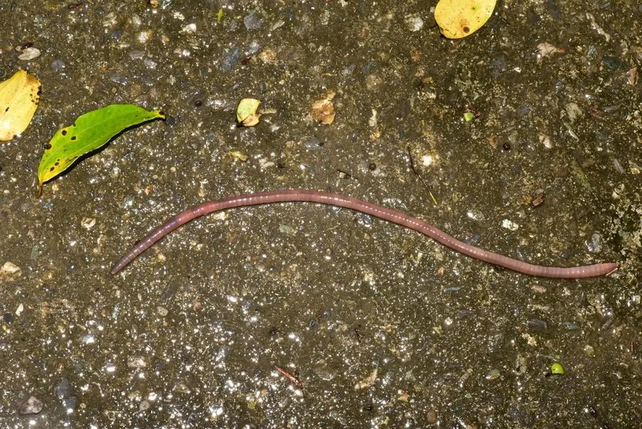

其他无脊椎动物 · 动物界
参环毛蚓 Amynthas aspergillum

我国华南常见的药用蚯蚓，体长可达三十厘米，每个体节环生一圈刚毛，晒干后即中药“广地龙”，靠吞食土壤有机质改良土质。
- 分类
- 门环节动物门纲环带纲目后孔寡毛目科巨蚓科属远盲蚓属
- 栖息环境
- 华南湿润的菜园、桑园、果园与河滩沃土，喜疏松富含腐殖质的土壤
- 地理分布
- 中国广东、广西、福建、海南等地，华南丘陵平原常见
- 保护级别
- 暂无评估；野生资源因药用捕捉明显减少
物种志
参环毛蚓体长15–30厘米，体宽6–12毫米，身体呈圆柱形，背部为灰褐、紫褐或红褐色，腹面颜色较浅。它最明显的特征是每个体节上都环生一圈细小的刚毛，这也是“环毛蚓”一名的由来。第14至16节处有一圈光滑的环带，颜色乳白，繁殖期格外明显。
它生活在华南湿润的菜园、桑园、果园和河滩沃土中，白天藏在洞穴里，夜间钻出地面吞食腐殖质、落叶和土壤中的有机碎屑，排出的蚓粪能改善土壤结构，因此被称作土壤工程师。参环毛蚓雌雄同体，异体受精，交配后产下卵茧。它的干燥全体是中药“广地龙”，有清热定惊、通络平喘的功效，因此野生个体常被大量捕捉，人工养殖逐渐兴起。
形态与习性
- 体长15–30厘米，体宽6–12毫米
- 刚毛每个体节环生一圈刚毛，故名环毛蚓
- 环带位于第14至16节，繁殖期呈乳白色
- 食性吞食腐殖质、落叶与土壤有机碎屑
- 繁殖雌雄同体，异体受精，产卵茧
- 药用干燥全体为中药广地龙，可清热定惊、通络平喘
趣味知识
- 它每个体节上都环生一圈刚毛，抓地力很强。
- 参环毛蚓晒干后就是中药材“广地龙”。
- 它排出的蚓粪能改良土壤，被称为土壤工程师。